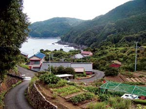
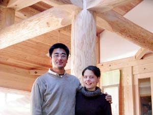
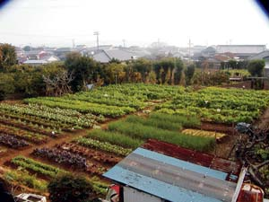
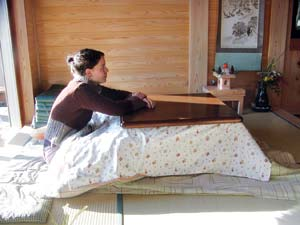
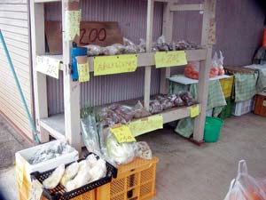
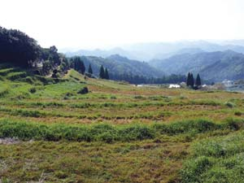
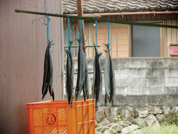
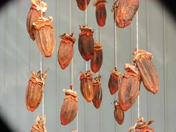

October is a good month on the Kii Peninsula of central Japan. The forest is full of wild chestnuts and mushrooms; the kitchen gardens overflow with persimmons, figs, fall eggplants and peppers; and the new rice is stored for winter. The still-generous sea provides squid, bonito and mackerel (although Japan faces the same issues of pollution and overfishing as the rest of the world). All told, this land I’ve made my home seems endlessly giving and welcoming.
I never thought I’d live in Japan. I grew up in San Francisco, dreaming of one day having my own farm somewhere on the West Coast. Several years of interning and working on farms across America convinced me that my dream could become a reality. But then I met my fiancé, Keita Hanai, who is Japanese, and plans changed.
I doubt Keita ever imagined he’d be living in rural Japan with an American farming enthusiast. He grew up on a huge agricultural commune in Japan, growing organic vegetables and rice, caring for cows and fixing farm equipment. But by the end of his 20s, corruption and conflict had soured communal life, and he left to study log building in Canada. That’s where we met. I was working for World Wide Opportunities on Organic Farms at an apple, pear and cherry orchard, and he was helping to build a log house at the same farm. We fell in love and a year later moved back to his home region of Japan, Mie prefecture. (A prefecture is a district roughly equivalent to a state in the United States).
We lived first in the small city of Matsusaka and then, in early 2007, moved deeper into the countryside to an area unknown even to many people living in Tokyo. Here my fiancé builds handmade houses using the rich lumber resources of Mie’s mountains. I teach English part time, study and take care of our gardens.
Moving to Japan has turned a lot of my ideas about sustainable living upside down. At first, I tried to transplant notions of country living straight from America to Japan. I brought seeds with me and tried to grow all my favorite vegetables, only to find many of them ill-adapted to the humidity of this area. I shed more than one tear over the lack of fruit suitable for pies and jams. I even acquired a little oven, a rare commodity, which I use to bake bread every week.
But I’ve gradually realized that to live sustainably here, I need to adapt to the food culture around me, which has developed over many centuries in relation to what can be grown and hunted in this area. I’ve learned about local methods of preserving, such as drying persimmons and daikons and making salty pickled plums. As my food choices changed, I found it increasingly easier to depend on the bountiful land around me.
But it’s not just the food that’s different. The appearance of the countryside itself is not at all what I’m used to. In Japan, a farm is not so much a piece of land as a way of living. Individual farms are uncommon. Instead, small clusters of houses are interspersed with terraced fields, forest and gardens. It’s common to have a number of fields in different locations, including some far up in the mountains, where tea and fruit are grown.
Even in cities, one can find vegetable fields scattered among the houses. By using land in this way, families remain closely connected and put the land to its most appropriate use. Yet, it hasn’t been easy to give up my dream of a little spread where I can’t see the neighbors and they can’t see me.
We rent a little house in Mihama, a small town between the ocean and the mountains. Unfortunately, older houses such as ours have extremely poor insulation and no central heating. They are built to stay cool in the summer - with sliding doors and screens - but not to stay warm in the winter. We heated our previous house using a woodstove fed with scraps from Keita’s work site. Unfortunately, we have to heat our current house with kerosene space heaters, which are ubiquitous in Japan. One of our goals is to generate our own electricity and heat.
I have, however, learned a few good Japanese tricks for keeping warm in the winter without using too much gas or electricity. One is called the kotatsu, a table with a heating lamp attached to its underside and a blanket covering it (see photo). On winter evenings, whole families often gather around the kotatsu with their legs under the blanket, thus reducing the space heated to several square feet.
Another great doohickey is the yutampo, the Japanese version of the hot water bottle. These are placed at the foot of the bed and are made of hard plastic or metal, covered in quilted bags. They stay hot enough through the night so you can use the hot water to wash your face in the morning. You’re not supposed to sleep actually touching the yutampo, but I usually sleep with my feet on it (touching the quilt, not the bottles directly - otherwise I would get burns).
As for the hot daily baths the Japanese are famously fond of, gas for heating water is conserved by using the same bath water for the whole family. Almost all houses have efficient on-demand water heaters. Solar water heaters also are common. And people still frequent bathhouses where the whole neighborhood can share one or two large steaming pools, but unfortunately the number of people who use bathhouses is shrinking rapidly.
Special winter food goes a long way toward keeping us warm. Nabe is a hot pot of vegetables and tofu, fish or meat dipped in boiling broth and kept warm on the table by a small burner heated with gas. We’re also warmed by eating roasted sweet potatoes, steaming stews and soups.
Our gardens provide many of the organic vegetables we eat. The weather is mild enough to allow us to eat summer vegetables late into the fall; greens, roots and brassicas through the winter; and spring crops quite early in the season. We have small gardens in front of and behind our house and “rent” a third that’s just a short walk away. The land for the latter is owned by an elderly woman and had become overgrown with weeds and turned into a de facto neighborhood garbage dump (unused agricultural land is plentiful in most rural areas). She lets us grow a garden there in exchange for cleaning it up.
To our surprise, we discovered great garden soil beneath all the trash. That plot gave us bumper crops of watermelon, pumpkins and peanuts last summer. We fertilize it with local chicken manure, rice bran and compost, plus we mulch it with rice hulls.
Neighbors warned us that the dirt path that runs past our garden is a thoroughfare for wild boars, which apparently love watermelon, but luckily we got to eat all of the melons.
My elderly neighbors, who have huge gardens of their own, provide a model and are a constant source of advice. After they retire from their paying jobs, many older people in Japan devote themselves to gardening, growing rice and tending citrus orchards. They are more than happy to share advice and seedlings with a young gardener (of which there are unfortunately few). Without this community of gardeners around me, I could never have adapted to such a different environment, full of unknown bugs, unfamiliar plants and surprising weather (including typhoons and “salt wind”).
We don’t yet grow as much of our own food as we’d like to, but buying food grown in our own community is easy. Although farmers markets are often disappointingly lackluster, there are several other excellent systems for distributing local food. First, small shops that sell local produce are plentiful. Second, there is a system of vendorless produce stalls called mujin-hanbai. Gardeners simply place a wooden shelf and tin money box outside their house and stock it with extra fruit and vegetables. Perhaps it wouldn’t work in a large city, but here no one worries about vegetable thieves. Third, there is a fantastic system of road stations, called michi-no-eki, all along Japan’s national highway network. They feature affordable local produce and fish, regional specialties and crafts. They are a great resource not only for passing tourists but also for people living in the area, and they make buying local as easy as it needs to be in order for it to become widespread. I would love to see such a system across the United States one day.
The more time I spend in the Japanese countryside, the more I begin to absorb the idea of community sufficiency as opposed to self sufficiency. My image of a remote farm where I strive to grow and raise everything myself is fading. I’m starting to realize how deeply my efforts toward sustainability depend on those around me. I rely on their knowledge and resources, their seedlings and boxes of oranges, and their commitment to caring for the land. It seems less relevant whether the pumpkin I eat was grown by me or by my neighbors.
Sadly, much of the rural landscape, honed for generations to provide for a large number of people in a small space, is falling into disuse: Carefully terraced fields disappear under weeds; multi-use native forests are invaded by bamboo, which is no longer harvested as aggressively as it once was; citrus orchards grow over with vines and die. Eating patterns have changed, and demand for food that can’t be grown in this area increases. (About 60 percent of Japan’s food is imported.)
We are fortunate to live in a place where rural lifestyles have a long history and are still maintained by the older generations. The opportunity to live in such a community and learn from it is an amazing experience. We hope to buy our own land before long, grow more of our own food, and deepen our knowledge of wise living. Beyond that, we want to help spread the word to young people in Japan’s urban areas that there’s a good life out here. With luck, some of them will explore it before those connections to the past disappear.
Visit the Japanese countryside in November or December, and you will see strings of deep orange persimmons drying under the eaves of farmhouses. Normally bitter when ripe, the fruit sweetens and softens as it dries.
If you want to try it yourself, use astringent persimmons, such as ‘Hachiya’ or ‘Honan Red.’ Pick or buy fruits when they are orange but still hard and inedible. If picking them yourself, use a clipper and cut the stem twig so it forms a small T above the fruit for easy hanging. Peel the fruit with a knife or vegetable peeler. Use sturdy string to tie the fruits from their twigs in a line, so they do not touch when hung vertically. Hang outside in a place that is protected from rain and snow, such as from nails or a horizontal pole under the eaves of the house. (I have also had luck drying persimmons without stems using clips or on flat baskets - just make sure to turn often.) When the fruit begins to soften (one to two weeks), gently squeeze and massage each one. Repeat this after a few more weeks. They are done when dark brown, leathery and shrunken, but not overly hard - about one or two months. Store in an airtight container in the refrigerator or a cool, dry place. Enjoy Japanese style, as a snack with roasted green tea (hojicha) or ginger tea.
|
 WINIFRED BIRD Hadasu, a Japanese farming and fishing village near their home. |
 MEGUMI HANAI Keita Hanai and Winifred Bird in a house that Keita built. |
 WINIFRED BIRD Gardens provide much of the produce for residents of the community. |
|
 KEITA HANAI Sitting in a kotatsu, a table with a heating unit below. |
 WINIFRED BIRD Mujin-hanbai, a produce station run on the honor system. |
 YOJI OTA Nachi Katsura, a town near the author’s home. |
|
 WINIFRED BIRD A typical way of preserving fish is to dehydrate them. |
 WINIFRED BIRD Visit the Japanese countryside in November or December, and you will see strings of deep orange persimmons drying under the eaves of farmhouses. |
|